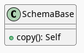

Introduction To Altair: Countries Per Year
Table of Contents
Setup
Imports
These initial imports are supports to make creating this post easier and aren't necessarily needed for the altair plots.
# python
from functools import partial
from pathlib import Path
from pprint import pprint
import json
import os
import re
# pypi
from bs4 import BeautifulSoup
from dotenv import load_dotenv
from expects import be, be_true, equal, expect
from tabulate import tabulate
# monkey
from graeae.visualization.altair_helpers import output_path, save_chart
These are the ones that are really needed for the plotting. I installed both of them through pypi.
import altair
import pandas
Some Setting Up
These are some convenience objects to save a little bit of coding when saving the chart.
SLUG = "introduction-to-altair-countries-per-year"
OUTPUT_PATH = output_path(SLUG)
HEIGHT, WIDTH = 600, 800
SAVE_IT = partial(save_chart, output_path=OUTPUT_PATH, height=HEIGHT + 100)
SOUPER = partial(BeautifulSoup, features="lxml")
This is to make printing out a pandas dataframe as a table a little nicer.
TABLE = partial(tabulate,
headers="keys",
tablefmt="orgtbl",
showindex=False)
The Data
load_dotenv(override=True)
table_path = Path(os.getenv("WORLD_HAPPINESS_TABLE"))
expect(table_path.is_file()).to(be_true)
table = pandas.read_csv(table_path)
print(table.shape)
(2199, 11)
The Data Columns
def column_printer(table, headers=("Column", "Type")):
print(TABLE(
((column, str(table[column].dtype))
for column in table.columns),
headers=headers))
return
column_printer(table)
| Column | Type |
|---|---|
| Country name | object |
| year | int64 |
| Life Ladder | float64 |
| Log GDP per capita | float64 |
| Social support | float64 |
| Healthy life expectancy at birth | float64 |
| Freedom to make life choices | float64 |
| Generosity | float64 |
| Perceptions of corruption | float64 |
| Positive affect | float64 |
| Negative affect | float64 |
For this initial post I'll only use the year, but
class Column:
year = "year"
Counting the Years
Using Pandas' value_counts Method
year_counts = table.year.value_counts().reset_index().sort_values("year")
table_counts = year_counts.T
table_counts.columns = table_counts.iloc[0]
table_counts = table_counts.drop(table_counts.index[0])
print(TABLE(table_counts, showindex=True))
| 2005 | 2006 | 2007 | 2008 | 2009 | 2010 | 2011 | 2012 | 2013 | 2014 | 2015 | 2016 | 2017 | 2018 | 2019 | 2020 | 2021 | 2022 | |
|---|---|---|---|---|---|---|---|---|---|---|---|---|---|---|---|---|---|---|
| count | 27 | 89 | 102 | 110 | 114 | 124 | 146 | 141 | 136 | 144 | 142 | 141 | 147 | 141 | 143 | 116 | 122 | 114 |
Now as a bar-chart.
value_counts_chart = altair.Chart(year_counts).mark_bar().encode(
x="{}:N".format(Column.year),
y="count").properties(height=HEIGHT, width=WIDTH)
VALUE_COUNTS_NAME = "value-counts-bar-chart"
VALUE_COUNTS_HTML = VALUE_COUNTS_NAME + ".html"
SAVE_IT(value_counts_chart, VALUE_COUNTS_NAME)
Using Altair's "count"
altair_counts_chart = altair.Chart(table).mark_bar().encode(
x="{}:N".format(Column.year),
y="count()").properties(height=HEIGHT, width=WIDTH)
ALTAIR_COUNTS_NAME = "altair-counts-bar-chart"
ALTAIR_COUNTS_HTML = ALTAIR_COUNTS_NAME + ".html"
SAVE_IT(altair_counts_chart, ALTAIR_COUNTS_NAME)
Comparing the File Sizes
The Files In Bytes
altair_counts_html = OUTPUT_PATH/(ALTAIR_COUNTS_HTML)
pandas_counts_html = OUTPUT_PATH/(VALUE_COUNTS_HTML)
print("Altair counts(): {:,} bytes".format(altair_counts_html.stat().st_size))
print("Pandas value_counts: {:,} bytes".format(pandas_counts_html.stat().st_size))
Altair counts(): 685,111 bytes Pandas value_counts: 2,067 bytes
Here's one of the problems with altair - it passes along the entire dataset and then tells vega to work with it in the browser. So, in this case it's passing all our happiness data, even though the chart doesn't use any of the columns.
with altair_counts_html.open() as reader:
altair_soup = SOUPER(reader)
with pandas_counts_html.open() as reader:
pandas_soup = SOUPER(reader)
def data_printer(soup: BeautifulSoup, index:int=0) -> None:
"""Gets the data from the soup and prints the entry
Params:
- soup: BeautifulSoup with the HTML for the chart
- index: which data row to show
"""
EVERYTHING = ".*"
EXTRA_BRACE = "(?=})"
DATASETS_EXPRESSION = "datasets" + EVERYTHING + "}}"
DATASET_EXPRESSION = "{" + EVERYTHING + "}" + EXTRA_BRACE
script = soup.find_all("script")[-1].string
dataset = re.search(DATASETS_EXPRESSION, script).group()
dataset = re.search(DATASET_EXPRESSION, dataset).group()
json_dataset = json.loads(dataset)
data_key = list(json_dataset.keys())[0]
data = json_dataset[data_key]
print("'dataset' has {:,} data entries\n".format(len(data)))
print("Entry {}:\n".format(index))
pprint(data[index])
return
data_printer(pandas_soup)
'dataset' has 18 data entries
Entry 0:
{'count': 27, 'year': 2005}
def frame_print(frame: pandas.DataFrame, index: int=0) -> None:
"""print length and one row of frame
Params:
- frame: data-frame to query
- index: index of row to print
"""
print("Frame has {:,} rows.".format(len(frame)))
print("\nRow {}:\n".format(index))
print(frame.iloc[0])
return
frame_print(year_counts)
Frame has 18 rows. Row 0: year 2005 count 27 Name: 17, dtype: int64
data_printer(altair_soup)
'dataset' has 2,199 data entries
Entry 0:
{'Country name': 'Afghanistan',
'Freedom to make life choices': 0.718,
'Generosity': 0.168,
'Healthy life expectancy at birth': 50.5,
'Life Ladder': 3.724,
'Log GDP per capita': 7.35,
'Negative affect': 0.258,
'Perceptions of corruption': 0.882,
'Positive affect': 0.414,
'Social support': 0.451,
'year': 2008}
frame_print(table)
Frame has 2,199 rows. Row 0: Country name Afghanistan year 2008 Life Ladder 3.724 Log GDP per capita 7.35 Social support 0.451 Healthy life expectancy at birth 50.5 Freedom to make life choices 0.718 Generosity 0.168 Perceptions of corruption 0.882 Positive affect 0.414 Negative affect 0.258 Name: 0, dtype: object
There's a project called vegafusion that is supposed to help with reducing the size but it requires that you use a jupyter notebook for interactivity (it uses python to make a jupyter widget or some such) so it won't work for a static site like this one. So when using altair we have to think about what we're doing if the size of the files is going to be a problem. In most cases it probably makes sense to do the transformations in pandas first and then only pass the data to plot to altair.
See the altair documentation on Large Datasets for more information.
A Chart, Part By Part
Altair's Chart
chart = altair.Chart(year_counts)
print(type(chart))
expect(chart.data).to(be(year_counts))
<class 'altair.vegalite.v5.api.Chart'>
The Chart class is defined in altair.vegalite.v5.api. This is its docstring description:
Create a basic Altair/Vega-Lite chart.
Although it is possible to set all Chart properties as constructor attributes, it is more idiomatic to use methods such as
mark_point(),encode(),transform_filter(),properties(), etc. See Altair's documentation for details and examples: http://altair-viz.github.io/.
The attributes set by the Chart class' constructor (it also accepets other keyword parameters that are passed to its parent classes) are:
- data
- encoding
- mark
- width
- height
By default they're set to Undefined which is an altair-defined object (see altair.utils.schemapi), and as noted, you don't normally set the attributes using the constructor (other than data which isn't mentioned in the docstring but appears to be passed to the Chart constructor by convention).
Here's a diagram of the Chart (defined in altair.vegalite.v5.api).

A Bar Chart
Once we have a chart object we tell altair that we want it to be a bar chart using the mark_bar method.
bar_chart = chart.mark_bar()
print(type(bar_chart))
<class 'altair.vegalite.v5.api.Chart'>
The mark_ methods are defined in the MarkMethodMixin class (a parent of Chart) which is defined in altair.vegalite.v5.schema.mixins module.

Looking in the mark_bar method, there's a lot of arguments you could pass to it, but fundamentally all it's really doing is making a copy of itself, setting the mark attribute to bar and then retu+rning the copy.
print("Original Chart mark: '{}'".format(chart.mark))
print("Bar Chart mark: '{}'".format(bar_chart.mark))
expect(bar_chart).to_not(be(chart))
Original Chart mark: 'Undefined' Bar Chart mark: 'bar'
SchemaBase
altair.utils.schemapi.

There are many more methods in altair.utils.schemapi.SchemaBase but I'm highlighting copy here because it gets used quite a bit by the other classes but is defined in this somewhat obscure place. The behavior is what you'd expect so I don't see a need to go over it, but it's one of those mystery methods that just pops up when you use deep inheritance like this that makes you wonder what's going on so I'll document it here, for now.
TopLevelUnitSpec
If you look at the parents of the Chart you might notice that it doesn't have the SchemaBase as one of its parents. So how does it end up with the copy method? Well, it does have the core.TopLevelUnitSpec as one of its parents and that in turn (eventually) inherits from the SchemaBase.

I didn't put in the modules for the core classes since they are fairly deep.
Encoded
The encode method is where we tell altair which columns match which parts of the chart. In this case we're only setting the x and y axes.
encoded = bar_chart.encode(
x="{}:N".format(Column.year),
y="count")
print(type(encoded))
<class 'altair.vegalite.v5.api.Chart'>
_EncodingMixin
The encode method is defined in the _EncodingMixin class, one of the Chart's parents.

The encoding method takes in whatever combination of positional and keyword arguments you pass into it and then:
- copies the Chart
- updates the chart's
encodingattribute - sets the copy's
encodingattribute to an instance of thealtair.vegalite.v5.schema.FacetedEncodingclass. - returns the copy
print(encoded.encoding)
FacetedEncoding({
x: X({
shorthand: 'year:N'
}),
y: Y({
shorthand: 'count'
})
})
Properties
propertied = encoded.properties(height=HEIGHT, width=WIDTH)
print(type(propertied))
<class 'altair.vegalite.v5.api.Chart'>

Note: This is a huge class with more methods than I'm showing here. The only ones we've encountered so far are
to_dict,saveandproperties. I usedto_dictto show that the chart has all the data from the pandas DataFrame andsaveis buried in the code that saves the chart to display it in this post -propertiesis the only one we're really interested in here.
The first thing to note about the properties method is that it doesn't define any arguments, it takes in any keyword arguments (and only keyword arguments, no positional arguments) and values for the arguments. Then:
- it makes a copy of the chart
- validates the arguments (unless the argument is the
data) - sets the arguments as attributes of the copy.
- returns the copy
Since we passed in height and width to the properties method, we get back a copy of our bar chart with the height and width set on the copy (as well as the "mark" which we set earlier with mark_bar).
print(propertied.mark)
print(propertied.width)
print(propertied.height)
expect(propertied.mark).to(equal("bar"))
expect(propertied.width).to(equal(WIDTH))
expect(propertied.height).to(equal(HEIGHT))
bar 800 600
HVPlot
Links
The Posts In This Series
Tutorial Sources
- Fundamentals of Visualization with Dr. Danielle Albers Szafir: Coursera course where the original tutorial came from.
- InfoVis Course from Marian Dork: Iniversity of Applied Sciences Potsdam that the Coursera course cites as the source for their tutorial.
The Data
- World Happiness Report Dataset [Internet]. [cited 2023 Dec 11]. Available from: https://www.kaggle.com/datasets/unsdsn/world-happiness
- Inc G. Gallup.com. 2009 [cited 2023 Dec 11]. Understanding How Gallup Uses the Cantril Scale. Available from: https://news.gallup.com/poll/122453/Understanding-Gallup-Uses-Cantril-Scale.aspx
- World Happiness Report [Internet]. 2023 [cited 2023 Dec 11]. Available from: https://worldhappiness.report/
Altair
- Layered and Multi-View Charts — Vega-Altair 5.2.0 documentation [Internet]. [cited 2023 Dec 12]. Available from: https://altair-viz.github.io/user_guide/compound_charts.html
- Large Datasets — Vega-Altair 5.2.0 documentation [Internet]. [cited 2024 Mar 8]. Available from: https://altair-viz.github.io/user_guide/large_datasets.html